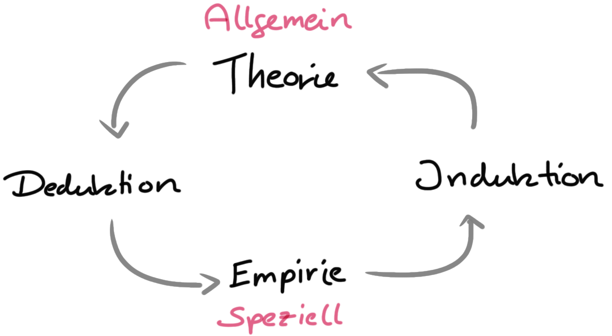
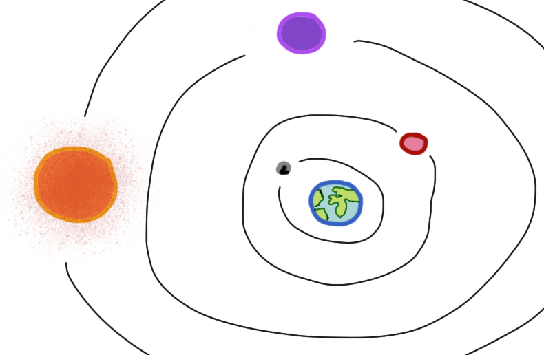
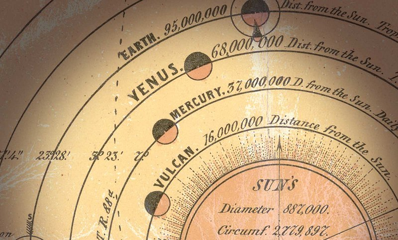
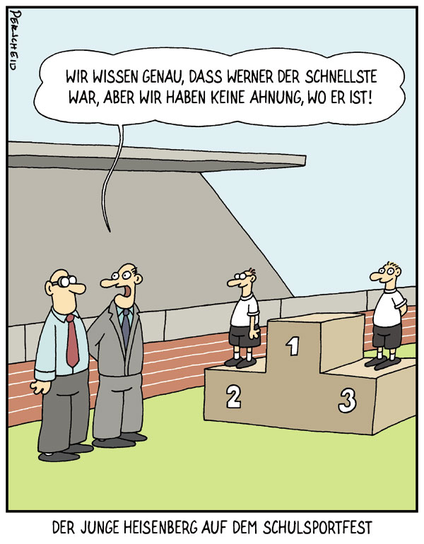
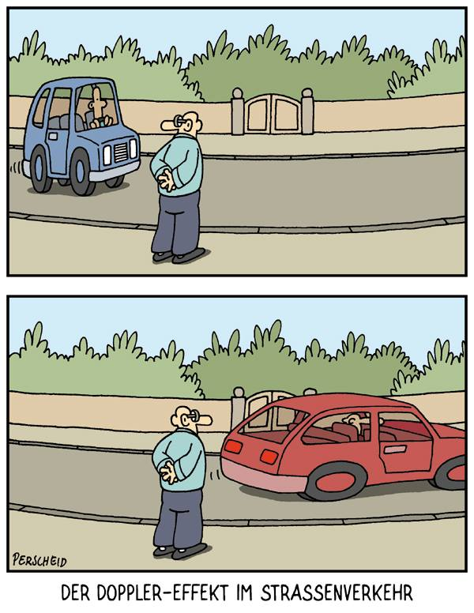
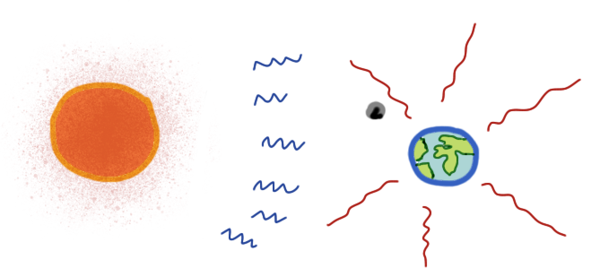
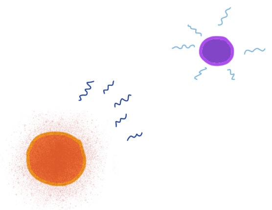
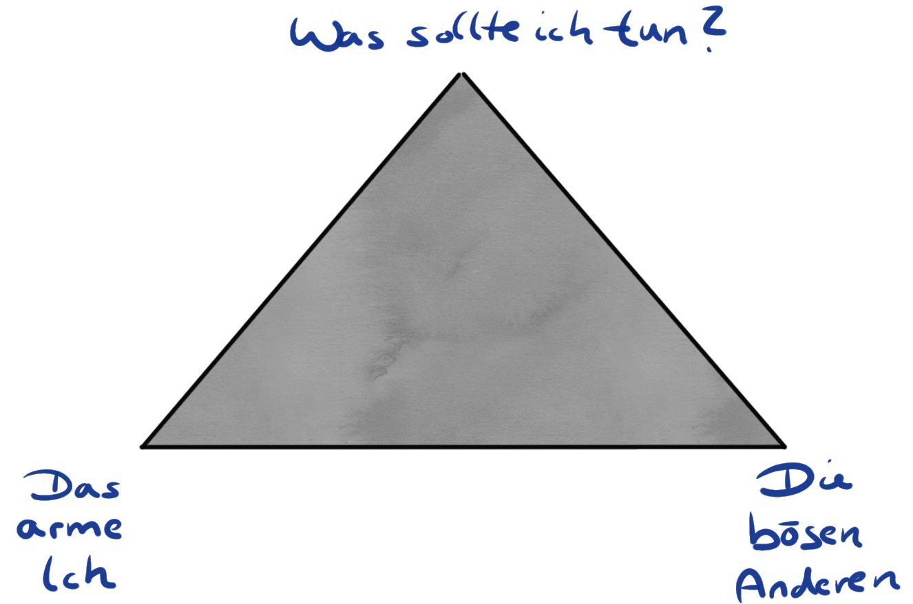
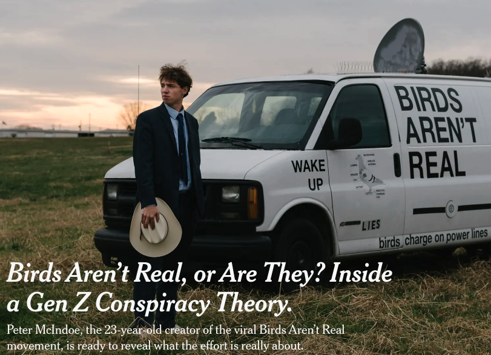

3 Forschungsprozess
Version vom July 23, 2023 um 21:07:54
“In der Wissenschaft beginnt alles Neue damit, dass jemand brummt ‘Hmmm… ist ja komisch.’” — Isaac Asimov

Wenn du forsche willst, musst du das was dich an Welt und Realität umgibt hinterfragen. Beginnen wir also mit einer kleinen Parabel von Wallace (2009) über das Wasser.
Da schwimmen zwei junge Fische und treffen zufällig einen älteren Fisch, der in die andere Richtung schwimmt, ihnen zunickt und sagt: “Morgen, Jungs. Wie ist das Wasser?” Und die beiden jungen Fische schwimmen eine Weile weiter, bis schließlich einer von ihnen zu dem anderen hinüberschaut und sagt: “Was zum Teufel ist Wasser?”
Okay, nette Geschichte über Fische, aber was denn nun mit wissenschaftlicher Forschung zu tun? Keine Angst, wir kommen nochmal auf die Geschichte mit dem Wasser zurück. Aber zuerst die Frage nach dem Woher kommen wir eigentlich und wohin wollen wir? Das sind die Fragen, die wir in diesem Einführungskapitel zu dem Prozess der Forschung angehen wollen. Für viele Anfänger ist das wissenschaftliche Arbeiten immer etwas sperrig oder gar mysteriös. Irgendwie passt das wissenschaftliche Arbeiten nicht so richtig in die Alltagserfahrungen hinein. Oder etwas plakativer, wissenschaftliches Arbeiten soll und muss sich vom gesunden Menschenverstand unterscheiden.
Wissenschaftliches Arbeiten und Forschen ist nämlich eine eigne Kulturtechnik. Kulturtechniken sind kulturelle und technische Konzepte zur Bewältigung von Problemen in unterschiedlichen Lebenssituationen. Dabei besteht ein komplexer Zusammenhang zwischen der Gestaltung der Umstände, dem technischen Können und der verwendeten Technik. Wissenschaft betreiben zu Können ist eine von vielen Kulturtechniken. Um eine Kulturtechnik ausüben zu können, sind bestimmte Voraussetzungen unerlässlich. Dazu gehören das Beherrschen von Lesen, Schreiben und Rechnen sowie die Fähigkeit zur bildlichen Darstellung. Analytische Fähigkeiten, die Anwendung von kulturhistorischem Wissen und die Vernetzung verschiedener Methoden sind ebenfalls voneinander abhängig. Eine Kulturtechnik entsteht nicht allein durch das Individuum, sondern durch Gruppenleistungen im soziokulturellen Kontext. Daher erfordern alle genannten Voraussetzungen stets soziale Interaktion und gesellschaftliche Teilhabe.
“Scientific knowledge, especially as stacked in textbooks, has an aura of objectivity - it is secure, uninfluenced by what we might hope or fear, and a solid assertion of what is true. Or, at least, that is what we are supposed to think. Knowledge, once formed, tends to become disembodied from its human origins. That is, while knowledge is preserved in the form of books, formulas, proofs, theorems, and such, we must not forget that before all this the formation of knowledge was the result of human thought, effort, and desire. Knowledge is a product of human hopes and fears; our emotions are crucial to its development, and its meaning cannot be truly understood if seen as some bloodless and emotionless enterprise.” — Writing science: how to write papers that get cited and proposals that get funded (Schimel 2012)
Hinter der Kulturtechnik des wissenschaftliches Arbeiten verbirgt sich konkret eine eigne Art zu Denken — eine wissenschaftliche Philosophie. Häufig ist dir gar nicht bewusst, dass es verschiedene Denkschulen und Denkansätze gibt. Mit Philosophen verbinden wir häufig die alten Griechen, die auf Plätzen, umrahmt von Marmorsäulen, einen Plausch abhalten. Oder aber wir haben das Bild von dem Philosophen Diogenes in dem Weinfaß vor Augen, was auch den Philosophen eher gering schätzt. Diogenes kommt als versoffener Obdachloser rüber, dem wir dann auch nicht zuhören müssen. Auch wenn er uns unbequeme Dinge sagen mag. Wir wollen uns also im folgenden Kapitel auf ein Abenteuer begeben und dabei uns verschiedene Denkschulen einmal näher anschauen. Dabei behalten wir im Hinterkopf, dass ein Abenteuer eine Unternehmung mit ungewissen Ausgang ist.
3.1 Zurück in die Zukunft
“So. Zeitleitung einschalten. Flux Kompensator - fluxuriert. Maschine läuft. Es kann los gehen.” — George McFly in Zurück in die Zukunft
Wo wollen wir eigentlich hin, wenn wir einmal den ganz großen Bogen spannen? Die Lehre soll sich ja immer in die Zukunft (eng. future) richten und Wissen von einer Generation zu der nächsten Transferieren. Wir haben ja immer nur eine begrenzte Zeit zu Verfügung in der ich dir Fähigkeiten (eng. skills) vermitteln kann. Nun ist die Frage, was soll ich eigentlich unterrichten und was wird in der Zukunft den nun gebraucht? Beginnen wir erstmal mit der klassischen 7G-Lehre, die du bis jetzt immer erlebt hast.
Die Pyramiden von Gizeh entstanden etwa von 2620 bis 2500 v. Chr. und waren bis zur Errichtung des Eifelturms im Jahre 1889 n. Chr. das höchste, von Menschen erschaffene, Gebäude.
3.1.1 Klassischer 7G-Unterricht
Was ist eigentliche die klassische Lehr- und Lernerfahrung aus der Schule? Oder andersherum, was ist Wasser im Bezug auf deine Schulerfahrung? Denn aus der Schule kommst du an die Hochschule und bringst für dich die Norm für deine Lehr- und Lernerfahrung mit. Deshalb hier einmal etwas mit Abstand auseinander genommen was klassischer Unterricht ist und warum dieser klassische Unterricht nach Helmke (2013) auch 7G-Unterricht genannt wird. Schule ist nicht so wie Schule ist, weil Schule so passiert, sondern weil ganz viele Akteure Schule so wollen.
- gleiches Alter
- gleicher Ort
- gleiche Zeit
- gleiche Art und Weise
- gleiches Lehrperson
- gleiche Inhalte
- gleiche Lernziele
Im klassischen 7G-Unterricht bearbeiten gleichaltrige Schüler:innen im gleichen Raum zur gleichen Zeit auf die gleiche Art und Weise mit der gleichen Lehrperson die gleichen Inhalte – und orientieren sich dabei an den gleichen Zielen. Wir sehen also, es ist ein starker Fokus auf das Gleiche für jeden. Die individuellen Lernansprüche der Schüler:innen werden somit höchstens zufällig vom klassischen Unterricht erfüllt.
Darüber hinaus haben wir in der Schule einen Fokus auf das Ergebnis und nicht den Prozess. Du bist darauf trainiert, bei einem ersten Versuch besser als der Durchschnitt zu sein und zu vergessen, was du getan hast, sobald du deine Klausur geschrieben hast. Es geht also primär um die Note am Ende und um möglichst effizient eien gute Note zu erreichen. César A. Hidalgo schrieb zum diesem antrainierten Verhalten in der Schule und dem Spannungsfeld der späteren Arbeit einen längeren Faden auf Twitter mit folgenden Eingangstweet.
Nachdem ich über ein Jahrzehnt lang Doktoranden und Masterstudierende beraten habe, stelle ich fest, dass die meisten Studierenden eine Sache erst einmal ablegen müssen: die Mentalität der Halbherzigkeit, die sie sich durch jahrelange Tests und Hausaufgaben angeeignet haben.
Was ist also Wasser für dich in deiner Schulerfahrung? Hilft diese Erfahrung eigentlich zukünftige Herausforderungen zu meistern? Vor allem ändert sich jetzt vieles im Bezug auf die Hochschule. Am Anfang des Studiums ähnelt noch vieles der Schule oder dir kommt es eher noch so vor. Im Verlauf des Studiums erfährtst du dann eine immer stärker werdende Individualisierung. Du musst dich um viel mehr selber kümmern und auch auch die Lehr- und Lernformate ändern sich. Warum das so ist, wollen wir im nächsten Abschnitt einmal anschauen. Der Fokus geht nämlich weg vom 7G-Unterreicht und hin zu den Future Skills (eng. Zukunfstfähigkeiten).
3.1.2 Future Skills
“Prognosen sind schwierig, vor allem, wenn sie die Zukunft betreffen.” — Mark Twain
Nachdem wir uns etwas mit der Vergangenheit deiner Schulerfahrung beschäftigt haben wollen wir nun einen Blick in die Zukunft wagen. Wir fragen uns daher, welche Fähigkeiten brauchen wir um mit zukünftigen Herausforderungen an uns zu meistern? Was sind den nun die zukünftig notwendigen Fähigkeiten (eng. Future Skills)? Hierzu nutzen wir als die direkte Quelle den Stifterverband-Initiative “Future Skills”. Dort finden wir dann auch die Future Skills: Die Skills im Überblick. Grundsätzlich ist die Idee nicht so neu, auch schon das humboldtsche Bildungsideal spricht davon, soviel Welt wie möglich in sich aufzunehmen. Die Future Skills sind aber strukturierter und erlauben ein mehr gerichtetes Lehren und Lernen.
Die Future Skills teilen sich in vier Kompetenzen auf, die wiederum aus verschiedenen Inhalten bestehen. Sicherlich ist es nicht möglich alle Bereiche abzudecken oder ein tiefes Sachverständis zu erlangen. Dennoch sind das die Themenfelder, die zukünftig eine Rollen spielen werden. Und das Leben ist lang und lebenslanges Lernen bedeutet ja auch nichts anderes als immer wieder neue Fähigkeiten zu erlangen. Zum einen müssen wir zwischen Spezialisten für den Umgang mit transformativer Technologien und Schlüsselkompetenzen im Allgmeinen für alle Arbeitsbereiche. In der Abbildung 3.1 wird dieser Zusammenhang nochmal dargestellt. Auch wenn du kein Spezialist für transformative Technologien sein willst, so solltest du dich in den Fachbegriffen auskennen, da du sicherlich im Team mit diesen Spezialisten arbeiten wirst. Im Bereich der zukünftigen Schlüsselkompetenzen machen die klassischen Kompetenzen nur noch einen kleinen Teil aus.

Betrachten wir die einzelnen Kompetenzen und deren Inhalte in Tabelle 3.1 nochmal detaillierter. Dabei ist wichtig zu bachten, dass wir die vier Kompetenzfelder i) technologische Kompetenz, ii) digitale Schlüsselkompetenz, iii) klassische Kompetenz und iv) transformative Kompetenz vorliegen haben. In jeder dieser Kompetenz haben wir noch weitgefasste Inhaltsfelder. Besonders im Bereich der technologischen Kompetenzen lässt sich ein umfangreiches Wissen kaum erreichen. Hier sind wichtige zukünftige Inhaltsfelder benannt, die sich teilweise überschneiden. Die digitalen Schlüsselkompetenzen werden im Rahmen der Hochschullehre teilweise vermittelt. Die klassischen Kompetenzen sowie die die transformativen Kompetenzen gehören zum weiten Bereich der Persönlichkeitsentwicklung und sollen hier auch als Leitfaden und Orientierungshilfe dienen.
| Kompetenzen | Inhalte |
|---|---|
| Technologische Kompetenzen | Data Analytics & KI, Softwareentwicklung, Nutzerzentriertes Design, IT-Architektur, Hardware/Robotikentwicklung, Quantencomputing |
| Digitale Schlüsselkompetenzen | Digital Literacy, Digital Ethics, Digitale Kollaboration, Digital Learning, Agiles Arbeiten |
| Klassische Kompetenzen | Lösungsfähigkeit, Kreativität, Unternehmerisches Handeln & Eigeninitiative, Interkulturelle Kommunikation, Resilienz |
| Transformative Kompetenzen | Urteilsfähigkeit, Innovationskompetenz, Missionsorientierung, Veränderungskompetenz, Dialog- und Konfliktfähigkeit |
Wir immer im Leben gilt, dass niemand weiß, was in der Zukunft gebraucht wird und wirklich nüzlich ist. Die Future Skills bieten aber einen guten Leitfaden zur Orientierung. Nicht alles muss man erfüllen um für die Zukunft gewappnet zu sein, wie wir dann noch später lernen werden. Die Idee zu definieren welche Fähigkeiten der Mensch für die Zukunft braucht ist nämlich auch schon sehr alt und wurde schon von vielen Philosophen durchdacht. Jede Idee hat natürlich ihre Zeit aus der sie kommt, aber manche Ideen überdauern dann doch Jahrhunderte. Schauen wir uns also im Laufe des Kapitels einige an.
3.2 Beispielhafte Forschungsprozesse
“Ein Schiff ist im Hafen sicher, doch dafür werden Schiffe nicht gebaut.” — John Augustus Shedd
In diesem Abschnitt wollen wir uns verschiedene Forschungsprozesse an verschiedenen historischen Beispielen anschauen. Spannend ist, dass keiner dieser Forschungsprozesse wirklich abgeschlossen ist. Auch ist ein Forschungsprozess eher offen. Selten ist der Anfang und das Ende wirklich präsize zu benennen. Das kann ja auch nicht sein, den Forschung ist ein fortschreitende Prozess, der kein definiertes Ende hat. Das ist das meistens auch das schwierigste beim Forschen. Ein Ende zu finden und seine Ergebnisse zu publizieren und der Öffentlichkeit zu Verfügung zu stellen, obwohl man subjektiv noch gar nicht fertig ist. Zwar mögen Forschungszweige nicht mehr relevant sein und verschwinden, aber die ganz großen Fragen bleiben meist vollständig beantwortet.
In Abbildung 3.2 sehen wir den Menschen der hinter das Himmelszelt schaut auf der Suche zu Verstehen wie die Himmelmechanik funktioniert. Dieses Bild von 1888 soll das mittelalterliche Weltbild symbolisieren. Der unbekannte Künstler zeigt in dem Holzstich die Suche des Menschen nach der Mechanik hinter der Welt. Die Welt folgt Regeln und diese Regeln sind zu entdecken. Damit sind diese Regeln auch determiniert bzw. besiegelt. Nun wissen wir aber aus unserer heutigen Weltsicht, dass dieses Weltbild nicht stimmt.

In der Tabelle 3.2 sind als Auswahl vier Kränkungen der Menschheit dargestellt. Es gibt je nach Aufzählung mal mehr oder weniger Kränkungen. Allen Kränkungen ist aber gemein, dass sie den Selbst- und Weltbezug der Menschen fundamental geändert haben. Jede dieser Kränkungen sorgte für einen Paradigmenwechsel in den folgenden Generationen. Nach diesen Entdeckungen war die Welt für die Menschen nicht mehr so, wie die Welt vor der Entdeckung war. In der Forschung werden diese Entdeckungen auch Kränkungen genannt, da sie den Menschen von dem Thron der Schöpfung stoßen und der Menschheit den Status der Ausgewähltheit nehmen. Am Ende sind wir dann doch nur felllose Trockennasenaffen, die auf einem x-beliebigen felsigen Planten im nirgendwo umtreiben.
| Art der Kränkung | Quelle | Beschreibung |
|---|---|---|
| kosmologisch | Kopernikus (1543) | Die Erde und damit auch der Mensch ist nicht Mittelpunkt der Welt. |
| biologisch | Darwin (1859) | Die Menschheit ist in das Entwicklungssystem der Organismen eingegliedert. |
| psychologisch | Freud (1895) | Der Mensch ist noch nicht Herr der eigenen Handlungen, sondern wird (vermutlich) vom Unbewussten gelenkt. |
| ethologisch | Heinroth 1910 | Nicht nur unser Körperbau, sondern auch unser Verhalten ist aus dem Tierreich hervorgegangen. |
In den folgenden Abschnitten gehen wir auf die vier hier vorgestellten Kränkungen der Menschheit ein. Wir schauen uns an, was die Begleitumstände der Entdeckungen waren und wie sich die wissenschaftlichen Erkenntnisse einordnen lassen. Nach dem Motto ‘Was ist Wasser?’ schauen wir uns die verschiedenen Denkschulen und wissenschaftlichen Ideen einmal näher an. Was die endgültige Wahrheit ist, werden wir aber in der Folge nicht herausfinden können.
3.2.1 Logik
“Alles was ich kenne, ist Logik.” — Commander Spock
Wenn wir an Logik denken, dann kommt uns vermutlich als griechischer Vertreter Aristoteles (384–322 v. Chr.) in den Sinn. Wenn ich an Logik denke, dann habe ich Commander Spock (2230–2263 n. Chr.) und Commander Data (2338–2379 n. Chr.) vor den Augen, aber das ist ja popkulturell immer etwas unterschiedlich. Allgemein gesprochen, hat Logik nichts mit Gefühlen zu tun. Demnach wird logischen Argumenten auch die Emotion oder Empathie abgesprochen. Prinzipiell muss ein logischer Schluss nicht empathielos sein, da ein logischer Schluss aber ein allgemeingültige Aussage im Sinn hat, ist wenig Platz für das Individuum. Zwei zentrale Ideen der Logik sind dabei die Deduktion und Induktion. Beide Verfahren sind miteinander verwoben, was du nochmal in der Abbildung 3.3 nachvollziehen kannst.

Betrachten wir nun als erstes die Deduktion. Die Deduktion ist ein logischer Denkprozess, bei dem spezifische Schlussfolgerungen aus allgemeinen Aussagen gezogen werden. In der Deduktion geht es darum, von bereits bekannten Informationen auf neue Erkenntnisse zu schließen. Dieser Prozess basiert auf der Anwendung von logischen Regeln. Ein klassisches Beispiel für die Deduktion ist das so genannte Syllogismus-Argument:
- Allgemeine Aussage: Alle Menschen sind sterblich.
- Spezifische Aussage: Sokrates ist ein Mensch.
- Schlussfolgerung: Daher ist Sokrates sterblich.
Im Kontrast dazu steht die Induktion. Die Induktion ist ein logischer Denkprozess, bei dem allgemeine Aussagen aufgrund spezifischer Beobachtungen oder Erfahrungen abgeleitet werden. Induktives Denken basiert auf der Annahme, dass wiederholte Beobachtungen oder Erfahrungen auf allgemeine Muster oder Prinzipien hindeuten. Ein Beispiel für induktives Denken ist folgendes:
- Beobachtung: Jedes Mal, wenn ich einen Apfel fallen lasse, fällt er auf den Boden.
- Beobachtung: Jedes Mal, wenn meine Freunde einen Apfel fallen lassen, fällt er auf den Boden.
- Beobachtung: Jedes Mal, wenn Menschen auf der ganzen Welt einen Apfel fallen lassen, fällt er auf den Boden.
- Schlussfolgerung: Daher schließe ich, dass alle Objekte, die fallen gelassen werden, auf den Boden fallen.
Es ist wichtig anzumerken, dass Induktion aufgrund der begrenzten Beobachtungen oder Erfahrungen immer zu gewissen Unsicherheiten führt. Eine Schlussfolgerung aufgrund induktiven Denkens kann immer widerlegt werden, wenn neue Beobachtungen oder Erfahrungen gemacht werden.
Zusammenfassend kann man sagen, dass Deduktion von Allgemeinem auf Spezifisches schließt, während Induktion von Spezifischem auf Allgemeines schließt. Deduktion bietet gewöhnlich eine hohe Gewissheit, während Induktion zu wahrscheinlichen Schlussfolgerungen führt, aber nicht notwendigerweise zu absoluten Wahrheiten. Die Deduktion und Induktion sind somit zwei grundlegende Methoden des logischen Denkens und des wissenschaftlichen Untersuchens. Sie werden in verschiedenen Bereichen der Philosophie, Mathematik, Logik und Wissenschaft angewendet.
3.2.2 Determinismus
“Alles ist bestimmt, der Anfang wie das Ende, durch Kräfte, über die wir keine Kontrolle haben. Es ist sowohl für das Insekt als auch für den Stern bestimmt. Ob Mensch, Gemüse oder kosmischer Staub, wir alle tanzen nach einer geheimnisvollen Melodie, die in der Ferne von einem unsichtbaren Pfeifer intoniert wird.” — Albert Einstein
Ist das Universum determiniert (lat. vorbestimmt) und lassen sich alle Ereignisse in der Vergangenheit und der Zukunft nach den Gesetzen der Physik vorhersagen? Wir haben die Logik der alten Griechen von unter anderem Aristoteles verstanden. Wir können über Deduktion und Induktion logische Schlüsse über die Welt um uns herum ziehen. Damit können wir durch das logische Verknüpfen von Aussagen zu allgemeinen Erkenntnissen gelangen. Nun fragen wir uns wie die Welt funktioniert.Damit sollte sich doch logisch die Realität und deren Gesetzte erklären lassen. Das hat sich auch Pierre-Simon Laplace (1749–1827) gedacht und kommt zu folgenden Schluss über die Welt.
“Wir müssen also den gegenwärtigen Zustand des Universums als Folge eines früheren Zustandes ansehen und als Ursache des Zustandes, der danach kommt. Eine Intelligenz, die in einem gegebenen Augenblick alle Kräfte kennt, mit denen die Welt begabt ist, und die gegenwärtige Lage der Gebilde, die sie zusammensetzen, und die überdies umfassend genug wäre, diese Kenntnisse der Analyse zu unterwerfen, würde in der gleichen Formel die Bewegungen der größten Himmelskörper und die des leichtesten Atoms einbegreifen. Nichts wäre für sie ungewiss, Zukunft und Vergangenheit lägen klar vor ihren Augen.” — Pierre-Simon Laplace
Nach dieser Aussage wäre es theoretisch möglich, eine Weltformel aufzustellen. Wir nennen diese Veranschaulichung auch den Laplaceschen Dämon. Der Laplaceschen Dämon ist die Veranschaulichung der erkenntnis- und wissenschaftstheoretischen Auffassung, nach der es im Sinne der Vorstellung eines geschlossenen mathematischen Weltgleichungssystems möglich ist. Grundlage dieses Gedankens ist der Gesetzesdeterminismus. Das Universum gleiche einem logischen Uhrwerk; eine Intelligenz habe das Universum mit seinen Gesetzen so geschaffen, wie ein Uhrmacher die perfekte Uhr bauen würde.
Ein ein Beispiel für den Determinismus wollen wir uns einmal unser Sonnensystem anschauen. Der Aufbau unseres Sonnensystems war ja Jahrtausende unbekannt. Wir wollen die flache Erde gleich hinter uns lassen und betrachten den Globus Erde im Planetensystem. Die ersten Theorien setzten die Erde in den Mittelpunkt. In Abbildung 3.4 sehen wir einmal das sehr vereinfachte geozentrische Weltbild (altgriechisch erdzentriert), welches auf der Annahme basiert, dass die Erde und damit auch der Mensch im Universum eine zentrale Position einnehmen, so dass alle Himmelskörper, wie Mond, Sonne, die anderen Planeten und die Fixsterne, die Erde umkreisen.

Das geozentrische Weltbild entspricht dem unmittelbaren Augenschein und wurde schon im klassischen Altertum in Griechenland, insbesondere bei Aristoteles, detailliert ausgearbeitet. Genauso wie die Flache Erde dem Augenschein entspricht. Das geozentrische Weltbild ist somit auch wesentlich besser mit dem gesunden Menschenverstand übereinzustimmen als eine sich bewegende Erde. Bei der Bewegung der Erde müsste man doch einen Fahrtwind spüren und fallenden Gegenstände eine schräge Bahn besitzen.
Koperinikus (1473–1543) und Kepler (1571–1630) haben die gängigen Ansichten über die Realität hinterfragt und versucht die Unstimmigkeiten in den Beobachtungen am Sternenhimmel durch ein besseres Modell der Wirklichkeit zu ersetzen. Dies gelang beiden auch bis zu einem Punkt. Zusammen mit der Gravitationstheorie von Newton konnte ein schlüssiges Modell des Sonnensystems erstellt werden. Es gab zwar noch ein paar Fragen, aber hier können wir einmal Philipp von Jolly (1809–1884) zitieren der dem jungen Max Planck (1858–1947) folgenden Rat mitgab.
“Die Physik ist eine hochentwickelte, nahezu voll ausgereifte Wissenschaft, die nunmehr, nachdem ihr durch die Entdeckung der Energie gewissermaßen die Krone aufgesetzt wurde, wohl bald ihre endgültige stabile Form annehmen wird. Wohl gibt es vielleicht in einem oder dem anderen Winkel noch ein Stäubchen oder ein Bläschen zu prüfen und einzuordnen, aber das System als Ganzes steht ziemlich gesichert da, und die Theoretische Physik nähert sich merklich demjenigen Grade der Vollendung, wie ihn etwa die Geometrie schon seit Jahrhunderten besitzt.” – Philipp von Jolly zum jungen Max Planck 1874 (Ecker 2017)
Eine der Fragen, die Newotn nicht beantworten konnte, war die Frage nach der Übertragung der Information der Gravitation? Wenn die Gravitation eine Kraft ist, wie wird die Kraft übertragen. Wie weiß die Erde und der Mond, dass beide da sind? Woher weiß die Erde von der Graviation der Sonne? Wie wird die Kraft übertragen? Darüber hinaus stellte man noch eine andere zu beobachtende Anomalie fest. Diese Anomalie war nicht wegzudiskutieren, weil messbar. Im 19. Jahrhundert stellte man bei Bahnbeobachtungen des Merkur fest, dass seine tatsächliche Umlaufbahn von der Form einer Kepler-Ellipse abweicht. Der Fehler konnte mit verbesserter Teleskopen auf 43 Bogensekunden von 3600 Bogensekunden pro Jahrhundert reduziert werden. Somit ergab sich eine Abweichung von \(43/3600 = 0.012 = 1.2\%\). Auch wenn dieser Betrag sehr klein ist, bleibt das Ergebnis unvereinbar mit der Himmelsmechanik nach Isaac Newton (1642–1726).

Erst mit der allgemeinen Relativitätstheorie von Albert Einstein (1879–1955) war die Abweichung der Merkurlaufbahn hinreichend erklärbar. Massereiche Objekte krümmen die Raumzeit. Objekte laufen auf Bahnen entlang der gekrümmten Raumzeit und beeinflussen sich so gegenseitig. Es ist keine Kraft, die an den Objekten zieht sondern die Krümmung des Raums, welches Objekte beeinflusst. Somit war die theoretische Physik an einem Scheitelpunkt angekommen. Würde sich jetzt die Aussage von Philipp von Jolly erfüllen und alles wäre erklärt? Wie sich herausstellte gab es neben dem ganz Großen und deren Wechselwirkungen, den Planetenbewegungen und Objekten auf der Erde, noch die atomaren Wechselwirkungen. Die Effekte von Protonen auf Elektronen und das Verhalten von Atomkernen.

Dann kam Werner Heisenberg (1901–1976) und formulierte 1927 die Heisenbergsche Unschärferelation, ein fundamentales Prinzip der Quantenmechanik. Die Heisenbergsche Unschärferelation besagt, dass zwei komplementäre Eigenschaften eines Teilchens nicht gleichzeitig beliebig genau bestimmbar sind. Die heisenbergsche Unschärferelation kann als Ausdruck des Wellencharakters der Materie betrachtet werden. Es herrscht ein Wellen-Teilchen-Dualismus vor. Wir können Elektronen oder Photonen als Welle oder aber als ein Teilchen beschrieben. Somit unterscheidet sich der konzeptionelle Aufbau der Quantenmechanik tiefgreifend von dem der klassischen Physik, so dass sich Einstein zu folgender Aussage hinreißen lies.
“Gott würfelt nicht!” — Albert Einstein
Bis zu seinem Tod stand Einstein mit der Quantentheorie und der statistischen Physik von Heisenberg und Co. im Zwiespalt. Die Idee, dass es zwei Modelle geben könnte, eines für die makroskopische Welt und eines für die atomare Welt, blieb für Einstein unbefriedigend. Wenn das kleinste Atom den Regeln des Zufalls folgt, dann kann es kein Weltengesetz nach Laplace geben. Wie soll etwas im Großen determiniert sein, wenn es im Kleinsten seines Aufbaues dem Zufall folgt? Hier ist die physikalische Forschung seit über einem Jahrhundert auf der Suche nach der Weltenformel, die die Quantenmeachnik mit der Gravitation zusammenbringt. So enden wir diesen Abschnitt mit dem 1. clarkschen Gesetz.
Die Unschärferelation gilt nicht nur in der Quantenwelt. Ort und Geschwindigkeit eines Elektrons lassen sich nicht gleichzeitig genau bestimmen. Doch auch in praktischen Bereichen wie Radarmessungen und Blitzern stößt man auf die Unschärferelation.
“Wenn ein angesehener, aber älterer Wissenschaftler behauptet, dass etwas möglich ist, hat er mit an Sicherheit grenzender Wahrscheinlichkeit recht. Wenn er behauptet, dass etwas unmöglich ist, hat er höchstwahrscheinlich unrecht.” — Arthur C. Clarke, 1. Gesetz

Mehr Informationen zum Dopplereffekt und deren Anwendungen auf Wikipedia und ein toller Artikel, der nochmal anders ins Detail geht sowie auf Deutsch ist, ist die Seite zu Christian Doppler https://www.christian-doppler.net/
3.3 Eine neue physikalische Theorie des Lebens
“Die Wissenschaft fängt eigentlich erst da an interessant zu werden, wo sie aufhört.” — Justus von Liebig
Warum vergeht eigentlich Zeit? Was ist eigentlich Zeit? Und warum haben wir eigentlich Uhren, die auf einem 12er Zählung bzw. auf einer 2-mal-12-Stunden-Zählung und dann auf einer 60ziger Zählung beruhen? Zuerst klären wir einmal diese komische Anonmalie. Wir haben ein60ziger System, da die alten Griechen es von den Ägyptern und diese wiederum von den Babylonier übernommen haben. Die 12 ist eine sehr spannende Zahl und hat viele Teiler, so dass mathematisch interessierte Babylonier die 12 höher werteten als die 10. Niemand wusste ja, dass wir mal mit dem Unsinn programmieren würden wollen. Zwar gab es dann kurz den versuch die Zeit auf die Dezimalzeit umzustellen und es wurde im Rahmen der französichen Revolution auch ein neuer Französischer Revolutionskalender erstellt, aber die Sache hat sich dann nicht so durchgesetzt. Zeit selber spielt übrigens erst seit der Erfindung der Eisenbahn eine echte Rolle. Vorher war es recht egal, wie genau die Uhren in der einen Stadt im Bezug zur anderen Stadt liefen. Man war ja eine ganz schön lange Zeit unterwegs, so dass Abweichungen nun auch keine Rolle mehr spielten.
Aber warum schreitet die Zeit eigentlich voran? Also warum gibt es ein gestern, heute und morgen? Dabei sind doch alle Naturgesetze in der klassischen Physik in der Zeit symmetrisch. Die Zeit ist auch symmetrisch im Bereich der neueren Entwicklungen wie der Relativitätstheorie als auch der Quantenphysik. Wir können also die Zeit in die eine Richtung laufen lassen wie auch in die andere Richtung. Daher gibt es eigentlich keinen physikalischen Grund, warum die Zeit immer nur in eine Richtung fortschreiten sollte. Es könnte also auch die Zeit rückwärts laufen. Der Tee und die Milch könnte sich in der Tasse der Queen wieder entmischen. Das passiert aber nicht.
Ein einziges Naturgesetz ist daran schuld und zwar der Zweite Hauptsatz der Thermodynamik. Der Zweite Hauptsatz der Thermodynamik besagt, dass alle Vorgänge immer nur so ablaufen, dass dabei die “Unordnung” größer und niemals kleiner werden wird. Leider ist der Begriff “Unordnung” physikalisch wissenschaftlich schwer zu definieren. Unordnung ist ein sehr weiter Begriff und vieles kann Unordnung bedeuten. Hier kommt es dann acuh stark auf den Kontext an. Deshalb haben Physiker dafür das Wort Entropie erschaffen. Daher ist es die stets wachsende Entropie, die der Zeit einen eindeutigen Richtungspfeil aufzwingt. So kommen wir dann zu diesem Zitat von Rudolf Clausius (1822–1888), dem Entdecker des zweiten Hauptsatzes der Thermodynamik, Schöpfer der Begriffe Entropie.
“Bei jedem natürlichen Vorgang nimmt die Entropie zu.” — Rudolf Clausius
Die Entropie steigt also immer weiter an. Damit stehen wir aber vor einer interessanten Frage, wenn natürliche Vorgänge stets einen Ausgang mit höherer Entropie als der Eingangszustand bevorzugen, warum gibt es dann komplexes Leben? Wieso haben sich Makromoleküle als Grundlage des Lebens in der Ursuppe der Urerde gebildet, wenn es doch der Zunahme der Entropie widerspricht. Hier kommt die Idee von Jeremy England (2013) ins Spiel. Folgendes Zitat statt aus seiner wissenschaftlichen Arbeit zur einer neuen physikalische Theorie des Lebens.
“You start with a random clump of atoms, and if you shine light on it for long enough, it should not be so surprising that you get a plant.” — Jeremy England
Noch ein ergänzender Artikel des The Quanta Magazine A New Physics Theory of Life und das PDF des Orginalartikels. Sowie der Vortrags von Jeremy England  \(\;\)No Turning Back: The Nonequilibrium Statistical Thermodynamics of becoming (and remaining) Life-Like
\(\;\)No Turning Back: The Nonequilibrium Statistical Thermodynamics of becoming (and remaining) Life-Like
Die Idee von Jeremy England ist, dass wir durch kurzfristige Erniedrigung der Entropie durch komplexe Strukturen wie sie das Leben hervorbringt, langfristig ein sehr viel schnellere Erhöhung der Entropie erreichen. Das heißt im Umkehrschluss, dass der zweiten Hauptsatzes der Thermodynamik Leben und komplexere Lebensformen begünstigt. Jeremy England gibt ein Beispiel mit energiegeladenen Photonen, die von der Sonne abgestrahlt werden. In der Abbildung 3.9 siehst du, wie die energiegeladenen Photonen als kurzwelliges blaues Licht einen belebten Planeten treffen. Durch das Leben wird die Energie der Photonen durch Photosynthese sowie andere biologische Prozesse absorbieren. Bei den biologischen Prozessen entstehen jedoch mehr langwellige Photonen als kurzwellige auf den Planeten treffen, so dass in Summe zwanzig energiearme Photonen pro energiereichen Proton als langwelliges rotes Licht die Erde verlassen.

In Abbildung 3.10 siehst du als Gegenbeispiel einen unbelebten Planeten, der von einem Stern angestrahlt wird. Zwar werden auch die hochenergetischen Photonen des Sterns von dem unbelebten Planeten absorbiert und wieder abgestrahlt, aber die Umwandlung ist weit unter dem Wert, die ein belebter Planet verursachen würde.

\(\;\)The Most Misunderstood Concept in Physics
3.3.1 Evolutionstheorie
“It is not the strongest of the species that survives, nor the most intelligent that survives. It is the one that is most adaptable to change.” — Leon C. Megginson zugeschrieben Charles Darwin
Würmer. Konkreter waren es das der Feld der Regenwürmer was Darwin am meisten beschäftige und Jahrzehnte seiner Forschung bestimmte. Anfang des 19. Jahrhunderts galten Regenwürmer als Schädlinge insbesondere außerhalb der Agrarwissenschaft. Darwins genaue Beobachtungen ihrer Lebensweise sowie seine Experimente über ihr Hörvermögen, ihre Lichtempfindlichkeit, ihr Kälte- und Wärmeempfinden und die Tätigkeit ihrer Reflexe führten dazu, dass sich das Wissen um die Nützlichkeit von Regenwürmern für den Ackerbau rasch verbreitete und auch außerhalb von Fachkreisen durchsetzte.
Darwin entwickelte die Evolutionstheorie während seiner Fahrt mit dem Segelschiff Beagle, die von Ende Dezember 1831 bis Oktober 1836 dauerte und ihn zu Küstenregionen und Inseln der südlichen Erdhalbkugel führte. An Bord der Beagle war Darwin als unbezahlter Naturforscher tätig. Darwin präsentierte erstmals eine frühe Version seiner Evolutionstheorie im Jahr 1858. Das Buch, in dem er seine Theorie ausführlich darlegte, “On the Origin of Species by Means of Natural Selection”, wurde 1859 veröffentlicht und war am Tag seines Erscheinens ausverkauft. Darwin betonte, dass Selektion ein entscheidender Faktor bei der Evolution ist. Obwohl zu Darwins Zeiten nur begrenzte genetische Kenntnisse vorhanden waren, erkannte Darwin die Zusammenhänge, die er auf seinen Reisen beobachtete, richtig.
Die Bone Wars war eine persönliche und wissenschaftliche Auseinandersetzung der beiden US-amerikanischen Paläontologen Othniel Charles Marsh und Edward Drinker Cope gegen Ende des 19. Jahrhunderts.
Im Gegensatz zu den Theorien Darwins, stelle Lamarck eine andere Evolutionstheorie auf. Der nach ihm benannte Lamarckismus war eine der frühen Evolutionstheorien um 1800. Der Lamarckismus besagt dabei, dass jede Art eine eigne Urform besitzt und dass diese Urform den Drang hat, sich möglichst perfekt anzupassen. Jede Art hat also einen innewohnenden Hang zum Perfektionismus. Dabei beeinflussen sich die ändernden Umweltbedingungen und die wechselnden Bedürfnisse der Tiere gegenseitig. Dadurch führt der Gebrauch bestimmter Organe zu ihrer Ausprägung, während der Nichtgebrauch bestimmter Organe zu ihrer Rückbildung führt. Diese erworbenen Eigenschaften werden dann an die Nachkommen weitervererbt. Beim Lamarckismus ist die Entwicklung gerichtet, und Arten entwickeln sich von einfachen zu komplexen Organismen. Jede Art hat eine eigene lineare Evolutionslinie und keinen gemeinsamen Vorfahren. Ein bedeutendes Problem zur Zeit von Lamarck war die Frage nach dem möglichen Aussterben von Arten. Die Frage kam auf als immer mehr Funde von Fossilien auftauchten, die keinen heutigen Tieren zugeordnet werden konnten. Lamarck bestritt jedoch weitgehend, dass Arten aussterben können. Die Fossilien seien vielmehr Ausprägungen einer bekannten Tierart, die jetzt nicht mehr existieren, da die Ausprägung nicht mehr notwendig ist.
Der Lamarckismus basiert auf einer willentlichen Ausübung der Evolution. Damit ist die Evolution von der Spezies gesteuert. Wir haben hier also wieder den Gedanken des Determinismus vorliegen. Das Schicksal einer Spezies ist in dem Sinn determiniert, dass es nur von einfach zu komplex geht und eine Spezies immer perfekter wird. Der Paradigmenwechsel von Darwin war die Idee, dass wir es mit Populationen von Arten zu tun haben und in diesen Population alle möglichen Eigenschaften schon in sich tragen. Die Populationen folgen einer Wahrscheinlichkeitsverteilung. Es gibt sehr viele Individuen mit den häufisgten Merkmalen aber auch ein paar wenige Individuen mit den seltenen Merkmalen. So kann es durch Naturereignisse, Zufälle oder anderer Ereignisse zu einer Selektion kommen. Durch die Selektion setzen sich vorher seltene Merkmale durch und die Merkmalsträger werden häufiger in der Population.
Die Große Sauerstoffkatastrophe (abk. GOE, eng. great oxygenation event) veränderte die Welt vor etwa 2,4 Milliarden Jahren grundlegend. Der Verursacher war eine Alge. Konkret die Blaualge. Somit spielt die Blaualge eine bedeutende Rolle in der Entwicklung des Lebens auf der Erde. Vor dem Auftreten der Blaualge war die Atmosphäre der Erde reduzierend, nach dem Auftreten der Blaualge oxidierend. Die Entwicklung der Erdatmosphäre machte einen erneuten Sprung. Große Mengen an Eisen oxidierten und sammelten sich in so genannten Bändererzen.
Im Weiteren Verlauf der Evolution wurde die Blaualge in andere Organismen aufgenommen. Dieses Integrieren ist die Idee der Endosymbiontentheorie. Die Endosymbiontentheorie besagt, dass die Chloroplasten in pflanzlichen Lebewesen vermutlich durch die Aufnahme durch Phagozytose von Cyanobakterien in die Ur-Form der pflanzlichen Zelle entstanden sind. Dafür spricht unter anderem die eigene DNA der Chloroplasten. Das gleiche gilt auch für die Mitochondrien in eukaryotischen Zellen.
Siehe dazu auch die Cyanobakterien oder Blaualgen: Bedeutung der Cyanobakterien für die Entwicklung des irdischen Lebens.
3.3.2 Wiener Schule
“Wenn dich etwas Äußeres bedrückt, so liegt der Schmerz nicht an der Sache selbst, sondern an deiner Einschätzung derselben; und diese kannst du jederzeit widerrufen.” — Marcus Aurelius
Der gute alte Determinismus, leider funktioniert der Determinismus nicht auf der Ebene des Universums und der physikalischen Naturgesetze. Aber vielleicht haben wir ja eine Chance, wenn wir uns auf das Gebiet der Psychologie begeben? Vielleicht ist der Mensch ja selber ein Getriebener von vorbestimmten psychologischen Abläufen. Das ist nämlich die nächste Kränkung der Menschheit. Sigmund Freud (1856—1939) sagt, dass der Mensch ist noch nicht Herr der eigenen Handlungen, sondern wird vermutlich vom Unbewussten gelenkt. Für mich ist der eigentliche Witz hier, dass wir mit Freud dann wieder zu dem Determinismus zurückkehren. Hat es nicht etwas befreiendes, dass man selber nur Opfer des eigenen Unbewussten ist? Alles Schlechte und alle Gewohnheiten sind gar nicht unter meiner direkten Kontrolle und so kann ich doch auch gar nichts dagegen tun.
Freud ist aber nur ein Vertreter der Wiener Schule der Psychologie, die Dann vielleicht im Schauen wir uns den nächsten Paradigmenwechsel einmal an.
- die Psychoanalyse nach Sigmund Freud (1856—1939),
- die Individualpsychologie nach Alfred Adler (1870–1937)
- die Existenzanalyse von Viktor Frankl (1905–1997)

Viktor Frankl Frankl (2010)
Eines seiner bekanntesten Werke ist das im Jahr 1946 erschienene trotzdem Ja zum Leben sagen: Ein Psychologe erlebt das Konzentrationslager, in dem Frankl seine Erlebnisse und Erfahrungen in vier verschiedenen Konzentrationslagern
Das Arme ich was sollte ich tun
(Zitate aus dem Buch du bist gut genug?)
“Du lebst nicht um die Erwartungen anderer Menschen zu erfüllen” — Ichiro Kishimi und Koga (2018)
Freud vs. Adler vs. Jung
Freiheitsbegriff: Ichiro Kishimi und Koga (2018) und Ichirō Kishimi und Koga (2020)
- Alle Probleme sind zwischenmenschliche Beziehungsprobleme
- Du lebst nicht, um die Erwartungen ander Menschen zu erfüllen
- Aufgabentrennung, die Aufgaben anderer abweisen. Wer erhält am Ende das Resultat, das sich aus der Eintscheidung ergibt?
- Freiheit heißt auch von anderen nicht gemocht zu werden.
- Glück heißt, einen Beitrag leisten
Extrovertiert vs. Introvertiert (jung)
\(\;\)Carl Jung’s Theory on Introverts, Extraverts, and Ambiverts
Carl Jung (1875–1961)
Adler: Um zu Mensch. Es gibt keine individuelle Vergangenheit. Der Mensch konstruiert sich den Zweck
Alles kalter Kaffee? Mark Aurel (121–180) und
\(\;\)Daily Stoic
- Amor fati (lat. Liebe zum Schicksal) Es ist nicht dir passiert. Es ist für dich passiert. Das Schicksal hat es für dich ausgesucht. Akzeptiere es, nimm es an, ertrage es, mach etwas daraus.
- Die Frucht dieses Lebens ist ein guter Charakter und Taten für das Gemeinwohl.
- Memento morti. Du könntest jetzt aus dem Leben scheiden. Das Leben ist kurz.
- Wir leiden mehr in der Phantasie als in der Wirklichkeit
- Wir alle lieben uns selbst mehr als andere Menschen, kümmern uns aber mehr um deren Meinung als um unsere eigene
- Du hast immer das Recht, keine Meinung zu einem bestimmten Thema zu haben
Fromm nochmal anders einordnen
“Liebe ist eine Entscheidung, ein Urteil, ein Versprechen. Wenn die Liebe nur ein Gefühl wäre, gäbe es keine Grundlage für das Versprechen, einander für immer zu lieben. Ein Gefühl kommt und kann gehen. Wie kann ich urteilen, dass es für immer bleibt, wenn meine Handlung kein Urteil und keine Entscheidung beinhaltet.” — Erich Fromm, Die Kunst des Liebens
“Intimacy is the capacity to be rather weird with someone - and finding that that’s ok with them.” — Alain de Botton
\(\;\)The School of Life - Learn, Heal, Grow
–> Raus mit Karl Popper (1902–1994), dass das hier alles nicht zu falsifizieren ist.
3.3.3 Falsifikationsprinzip
“Soweit eine wissenschaftliche Aussage über die Realität spricht, muss sie falsifizierbar sein; und soweit sie nicht falsifizierbar ist, spricht sie nicht über die Realität.” — Karl Popper
Du findest auf YouTube Grundlagen der Wissenschaft und Falsifikationsprinzip als Video Reihe.
Karl Popper
Karl Popper ging davon aus, dass die Annäherung an die Wahrheit für Menschen das höchste Ziel sei, jedoch eine endgültige Bestätigung oder Verifikation unmöglich sei, da nicht alle möglichen Fälle untersucht werden können. Einzig das Ergebnis einer Falsifikation könne als vorläufig gesichert gelten. Auf dieser Grundlage leitete Popper eine strenge, aber auch tolerante Vorgabe für neue und ungewöhnliche Theorien ab: Jede Idee könne als wissenschaftliche Theorie betrachtet werden – unter der Bedingung, dass sie durch Falsifikation überprüfbar ist!
Dieser Ansatz sollte sicherstellen, dass man entweder mit widerlegten oder noch nicht ausreichend abgesicherten Theorien arbeitet. Da wissenschaftlicher Fortschritt oft auf bereits Vorhandenem aufbaut, erlaubte Popper jedoch vorübergehend, Theorien zu akzeptieren, die bereits mehreren Falsifikationsversuchen standgehalten hatten – natürlich nur so lange, bis sie schlussendlich widerlegt werden würden.
Wie man Poppers philosophischen Knüppel in einen Blumenstrauss für die Psychoanalyse verwandelt
Max von Petterkofer und der Positivismus
https://de.wikipedia.org/wiki/Max_von_Pettenkofer
Robert Koch
3.3.4 Cargo Cult Science
“The first principle is that you must not fool yourself and you are the easiest person to fool.” — Richard P. Feynman
Du betreibst Cargo Cult, wenn du eine Handlung formal korrekt durchführst, aber der Kontext keinen Sinn ergibt. Klingt jetzt erstmal kryptisch, aber viele Handlungen entspringen mehr einem Mem als einer rationalen Ursache.
Die Übertragung des Mems durch Kommunikation ist dabei nicht als Kopie („Blaupause”) eines Gedankens von Gehirn zu Gehirn zu verstehen, sondern – indem der wesentliche Kern der Botschaft erfasst und weitergegeben wird – eher wie ein “Backrezept” zur Reproduktion desselben Gedankens.
Feynman (1998)

“Jede hinreichend fortschrittliche Technologie ist von Magie nicht zu unterscheiden.” — Arthur C. Clarke, 3. Gesetz

3.3.5 Wahrscheinlichkeitsbegriff
“Gott würfelt nicht!” — Albert Einstein
3.3.6 Anthropozän
Holozän, die vor 11.700 Jahren begann, beendet und das Anthropozän formal in der Geologischen Zeittafel eingeführt werden
Zeitalter des Menschen
Crawfordsee in Ontario, Kanada Im warmen Sommer werden Kalzitminerale ausgefällt, die herabrieseln und alljährlich eine markante weiße Lage bilden. Wie Baumringe.
„Global Boundary Stratotype Section and Point”, GSSP, heißt das sperrig im Fachjargon. Zuweilen sagt man auch „Golden Spike”,
Vor allem aber sei ab den frühen 1950er-Jahren das Isotop Plutonium-239 nachweisbar – eine globale Signatur von Kernwaffentests.
3.3.7 Data Science
- Real World Data Liu und Panagiotakos (2022)
- Warum Data Science Hariri, Fredericks, und Bowers (2019)
Von den Daten zu Erkenntnis und zurück.
3.4 Und jetzt?
Zull (2006)
- Qualitative / Quantitative Forschung
- Why the pen its mightiger than the keyboard Mueller und Oppenheimer (2014)
- Eigene Sachen Kruppa u. a. (2021)
- Paradigmenwechsel?
Warum eigentlich Prozess? Geht es nicht eigentlich um das Ergebnis? Also wollen wir nicht was Neues entdecken?
Kapitalistische Idee des Gefühles des Mangels als Triebfeder für den Konsum und das Wirtschaftssystem.